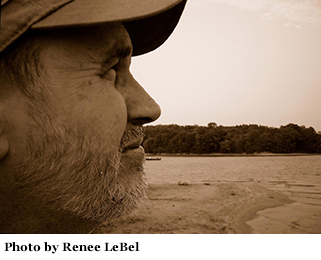

A Quarterly Journal
Jeffrey Woodward, Founder & General Editor
Volume 6, Number 3, September 2012

Patricia Prime
Te Atatu South, Auckland, New Zealand
A Game of Tag: Gary LeBel on Tanka Prose
Your tanka prose seems to contain many references to your personal experiences. To what extent is Gary LeBel to be found in your work?
First of all, Patricia, I thank you for inviting me to discuss my tanka prose. Actually, there’s a mix of personal experience, thumbnail sketch, pure fiction, fantasy, boldface lie, story and/or myth (and often more than a pinch of hyperbole) in most of my tanka prose pieces. What’s “real” can sometimes mean ostensibly. In art or writing I make no distinctions. Since most everything in the world is larger than I am, I shoot for the broader view if I can, and to answer your question more directly, some but certainly not all. I plumb my own experience if only to break free of it.
Could you explain the inspiration for your tanka prose “Dear Cousin” and say why you decided to write it in the tanka prose form?
I had been visiting our family cemetery in rural Maine when I discovered a cenotaph. My aunt’s amazing and painstakingly researched family genealogy, which she assembled years before the internet I might add, supplied me with a few facts regarding the distant relative for whom the stone was erected. So in the prose section I imagined this young man’s tragic story. In answer to the second part of your question, I would say that the flexibility inherent in the tanka form allows for the mingling, in one choir, of both an objective and subjective voice.
Would you like to discuss other specific tanka prose works such as “Re-reading the Tosa Diary,” “Curve” and “White Azaleas”?
“Re-reading the Tosa Diary” was written as a thumbnail sketch and is printed largely word-for-word from the notes I made in longhand. It is my homage to Lord Tsurayuki, from whom I am trying, artistically, to withhold fealty.
“Curve” was written after witnessing the two young boys, its subject, walking down railroad tracks together as I drove over a bridge in the mountains of north Georgia, and so the piece stems entirely from that one quick glance, as many of my pieces do; images of this kind are very evocative to me, akin to a cinematograph in B&W or a sepia photograph. They frequently supply the initial subjects and/or “jumping-off points” for my tanka prose.
“White Azaleas” was the result of sinking down into a pleasant memory and allowing “horse” images to float up. I added the accompanying graphic, a montage with a Sapphic fragment in the original Greek, because I thought it clicked, if obliquely. I favor these kinds of mixed pairings, of words with pictures.
How does tanka prose as a medium differ for you, Gary, from other forms you often practice, such as the tanka sequence or the haibun? What in particular attracts you as a writer to tanka prose?
The tanka poem itself, in tandem with the right text, allusive, tangential or bare-boned, allows for much flexibility and freedom, both in subject matter and form. Being generally short, though not necessarily so, tanka prose need not stray too far from their front yards for, as the great Irish poet Patrick Kavanagh put it,
To know fully even one field or one lane is a lifetime’s experience. In the world of poetic experience it is depth that counts and not width.
Tanka prose offers the writer a kind of intimacy which, when handled carefully and sensitively, is capable of covering much expressive ground. But this is not to say that by virtue of being occasionally “intimate” that tanka prose surrenders its universality, it doesn’t. As I implied above, as long as a reader can explore a given work without the author constantly barging in or lapsing into solipsism, tanka prose can be a very effective mode of expression, personal or otherwise. Its flexibility is rendered even more pliable by this same quality already inherent in the tanka poem which, as I’d said earlier, sings with both voices. Also, I might add that I enjoy writing prose equally as much as writing poems; this may account for the lion’s share of my reason for preferring tanka prose.
At its best, tanka prose reads far more poetic than prosaic, which is really the source of its power, a potency that was there from its beginnings in the nikki (the poetic diary) and the monogatari (the tale).
Some would maintain that the author’s presence (their style perhaps?) should always show translucently through the work like blood beneath the skin, but I disagree. I prefer not to be recognized in my writing. Jeffrey Woodward once referred to me as a “chameleon,” a remark for which I’m forever grateful, not for his description but because he understood intuitively what I was after. Because I’m an avid reader, I find the continual, nagging presence of an author to be a serious distraction. Far too much of the literary world is constructed on the principle of “me, myself, an eye,” a phrase I believe derives from jazz musician Charles Mingus, though I may be using it ironically. I’m not denigrating the purely “personal” or diarist voice in tanka prose, but merely questioning to what ultimate purpose it is employed. I have always believed that the role of poetry, if not narrative prose and prose fiction as well, is to elevate experience whereby it is able to transcend its locality (and itself) to touch another’s mind as viscerally as with one’s fingers. If that is not our wish, then why write? Tanka prose affords the elbow room to accomplish this.
How does the tanka inform the prose, and vice versa, in the tanka prose that you write?
I like to employ masks and personae. In “from The Lost Wax,” published by Haibun Today in June of this year, these devices were employed, a persona in Part One and a mask in Part Two. There is a difference between the two concepts. The persona, of course, pretends to step into another’s shoes; however, the mask can serve as a neutral witness, a camera if you will. Neither voice is constrained by time. As a technique, they help me to stretch beyond my own life. In “Sea-change,” published in Jeffrey Woodward’s The Tanka Prose Anthology, I used a persona in epistolary form and set for the accompanying tanka the task of bridging the past with the present.
My credo is this: that the tanka should always be more than a footnote to the prose: it may serve as a rudder that turns the piece about or it may recoil and strike against the prose. In most successful pieces, the tanka either (a) sets up a delicate linkage with the prose either obliquely or as a veiled commentary to widen the range of the piece, (b) haunts it with a subtle lyricism, echo or resonance, (c) brings down its curtain with surprise or irony, (d) delivers an unexpected epiphany, (e) tells part of the story unexpressed in the prose, sometimes the heart of it, (f) sets or alters the tone at the beginning, through the middle or at the end, (g) leaves the reader with a question that likely has no answer, or (h) functions as the coda, as in a piece of music. The finest prose, poetry and music all have sound, tension, momentum and rhythm in common.
“Meaning,” so often debatable and rather fickle in my opinion, is at best untrustworthy, and so that is not something I struggle with. I believe that people read primarily to “feel” something rather than to “get it.” Music has no “meaning,” and so as a sister art, why should literature spell out anything as precisely as an electrical schematic?
Perhaps another way to say this would be to suggest that the tanka and prose perform a kind of pas de deux, or dance, if multiple tanka are employed. And none of this is easy to do. In the end, what you make of tanka prose should be no more complicated than fashioning a piece of furniture for the mind’s reclining.
Stating the obvious, that technique is the principle of construction in the act of writing, how do you approach writing a tanka prose piece?
Purely as play, but this is not to say that it is made without labor, most of which occurs long before a word of it ever reaches the pen. I write fiction and longer poetry; I paint, collage, assemble, and make haigas and montages all for the same reason I write: to explore an idea and see where it will go . . . and of course, for the ride in getting there.
I start with an idea or image (which may eventually prove false or inadequate, or no longer necessary or important as the piece progresses). If it jells, I continue; if it stands there empty-handed, I leave it for another day or try it in another medium, if it nags hard enough. In some of my tanka prose pieces, the prose slipped directly out of a pre-existing tanka or series of tanka. At other times it emerges out of a piece of music, or a montage I’ve finished, both of which are unexplainable; all I know is that somehow they “talk” to one another, these varying mediums, on some level I don’t understand, like dolphinese.
I write only to open doors. Hopefully, a given work in progress will surprise me by the direction and shape it insists on taking. The process of writing itself, of discovering something new, of investigating how it confronts your intellect, of imaginary “voyaging,” is what keeps me engaged and prods my sleepy head to keep its ears and eyes open, like the whack of an old-time school master’s wooden ruler.
Does research create a number of possibilities that you think about and transform in different ways? I refer here to your specific works: the letter-form of “An Epistle of Mibu,” the image of Jesus looking “more biker than savior” in “Last Light in Talmo” and the “mask of poetry” in “The Lady and Her Eyes,” which is accompanied by your beautiful artwork.
I sometimes research a topic after I stumble over it unexpectedly. I say that because I’m a scattered and eclectic browser of knowledge (and minutiae). The topic may be a real event, a work of art, a memory, a snippet of another’s writing, an image, a quotation, a discovery in particle physics (such as we’ve recently had with the Higg’s boson, bravo!), a small town at 3 AM, the ever-mysterious realm of Eros, an entirely imagined story, a stunning seascape, a mythical landscape, an historical personage, an abandoned house, two lanky boys walking down railroad tracks or simply an interesting fact or fleeting glimpse or sudden insight. All these sources and more serve as a potential generator of tanka prose.
Regarding the piece “An Epistle to Mibu” specifically, I had been making translations of his poetry from glosses at the time. In the process of unpeeling his work, I decided to “write him a letter” because he seemed to be whining, just a little, in one particular waka as the well-heeled are wont to do. But that was only the catalyst whose real aim was to contrast our two millennia. Through the use of ekphrasis and ekphrasis-like writing, we are able to make contact with others over vast or more recent stretches of time, in spirit, which is another of poetry’s gifts. And into the bargain, poetry continually reasserts its rightful claim on the timelessness of inner life.
The “more biker than savior” description in “Last Light in Talmo” was a droll but honest appraisal of what I saw as I drove by that particular evening, but what I had hoped to accomplish was to suggest more fundamental questions such as the nature of faith itself, the manner in which the faithful “picture” or “see” their “godhead” emotionally, spiritually or intellectually, or the notion of a world sliced through by the cleaver of dogma, sectarianism and religious intolerance. For me, all these questions stand behind an image of the Christ that looks “more biker than savior.”
All creative expression, I believe, is a kind of mask whose truth only the mirror of art can reflect. And thank you for your assessment of my artwork; in the case of “The Lady and Her Eyes,” the translation of the Lady’s waka came first, the collage second and the tanka prose immediately after. Here I have attempted to involve the reader in constructing the collage and, in so doing, convey the idea that each cut and paste has a reason, though often labyrinthine, behind it, and hence an analog to how we “cut and paste” our beliefs, opinions, passions and thoughts.
How much attention do you pay to stylistic elements? In what ways do you work on syntax, phrasing, finding the right words to communicate your story?
No matter what shape any piece of writing takes, syntax and phrasing are the fuselage in which its ideas are enclosed: they organize and enfold the work into a forward-moving, streamlined vessel of thought. Because I recite everything I write aloud each time I edit and revise, problem areas, such as “stuck gears” of momentum, awkwardness, poorly made sentences, weak metaphors, inappropriate word choices or a broken internal compass often stand out like a smile of crooked teeth. Sound and pacing are key constituent elements.
I often use end rhyme, as well as internal, slant or sight rhyme in my tanka; I enjoy using alliteration which is essentially musical. At times certain words in the last sentence of the prose will echo again (by rhyming) in the tanka. After all, rhyme is my western heritage; it exists because it fits our language to a tee. To me, it seems false for a poet to deny his heritage and submerge himself in the affectations of another country. Fusion, however, is good; it fosters growth and change as well as global participation, all in the spirit of advancing literature.
As far as sense goes, I believe it will follow if you trust wholeheartedly in your content and let it rule. As far as the “right words” go, the weather must fit the landscape. My well-thumbed Roget’s is always within reach. If you are chasing a particular image, sound or context, you must surround yourself with all your options unless, of course, you can remember them all, but I cannot.
I practice ekphrasis regularly to keep my descriptive hinges as oiled as I can so that the door of my imagination won’t squeak or jam when I sit down to write (though it often does). The greatest freedom I experience in life is engagement with art.
As far as “style” goes, what can I know? Jean Cocteau once said that asking an artist to discuss their work is like asking a plant to expound on horticulture, or something like that.
Do you tend to compose spontaneously or by applying certain procedures to material you have previously written? What is the role of revision in your work. Do you spend a lot of time working on a piece before it’s finished or is it quite a swift process and then you rework things over a long period of time?
My better, shorter pieces were (and still are) written spontaneously in situ, as one makes a watercolor sketch. I like things a bit raw and rough, unfinished if you will, and when I first encountered John Constable’s oil sketches, they prickled my spine. To me they are far more expressive than his finished oils. That is what I strive for, something as fresh as I can make it, scumbling and all.
In “Mason Jar,” almost all of the prose remained intact throughout the editing process while it waited for an ending poem (which often takes a while); however, the piece still underwent a lengthy reviewing process (letting it grow stone-cold) before I ventured to submit it.
I often work on longer pieces over extended periods of time. In the main though, I would have to say that nearly all of my writing (and artwork) begins and develops spontaneously. But I don’t ever sit down and say to myself, “I think I’ll write a tanka prose piece now.” I have to be snagged hook, line and sinker by whatever has bent the pole of my interest.
With any project, I’m not in a hurry to finish or publish; good thing, because it often takes me a while to realize why a particular image or idea or phrase doesn’t work, or just isn’t “quite right.” I hate to give up anything, but you must, and much. I dread having an editor find a glaring flaw that I could not. It’s a curious thing, but I submit my work only after it has come to seem that a better writer has written it.
Some tanka prose pieces begin with a central idea or image in mind and then, seemingly of their own volition, they shoot off into other directions that, in my better pieces, sometimes bear far different fruit than I reached for initially: I try to let them go to wherever they seem to be bound. After all, prose should evolve and deepen just as a poem does or a painting. If this implies that I am undisciplined, scatterbrained, sloppy, sketchy, lazy and reckless, I stand accused!
I believe that my best short tanka prose piece to date is “Mason Jar” only because the ending came as a pleasant surprise while I was scribbling it down in longhand, riding home from a field services project in Mississippi. How I wish that would happen more often . . . .
But spontaneity can also be wrong-headed. So I revise and rethink, destroy and begin afresh, and sometimes renege on a change and revert to my “first thought”; I whittle and smooth a stubborn work over time for this is where the pleasure and excitement of writing happens, in the process of creating it. After all, the word “poem” derives from the Classical Greek verb ποιέω (poieō), “to make.”
Has any specific classical Japanese work of tanka prose influenced your writing? And what of your English-language contemporaries?
The Tosa Diary of Ki no Tsurayuki sparked my initial interest in the form, in Earl Miner’s translation from his Japanese Poetic Diaries. The Genji Monogatari (both Arthur Waley’s and Royall Tyler’s versions) was and is still influential as was Izumi Shikibu’s Diary, all of which leaves one with a hankering to join the party. Manyoshû and Heian-era waka (and gendai tanka exceedingly) have a way of getting under the skin and suggesting new paths, often by provocation, and also because they are seldom didactic or claustrophobically confessional.
Of my contemporaries, I read them all in the various journals where tanka prose is included. Some pieces make me sit up in my chair and take notice, others make me mumble “I wish I’d written that,” some kill me softly with beautiful prose, ballet-like pacing or exquisite phrasing, some make me laugh (also a highly valuable commodity!) and still others solidify the direction I am taking by contradistinction. As I don’t wish to slight anyone by their omission, I cite no one: they know who they are.
What would you like to see as the future of tanka prose?
Only this: that writers be unwilling to let the form slide into an easy predictability—to take risks, defy convention, to break and remake the mold at every opportunity, to never tame or let it become fully house-broken, nor fond of any stylistic leash. I would like tanka prose to strive to be other than a haibun with tanka pinned on. And I should like to see writers thrust their new interpretations of the form out into the so-called “mainstream” so that it vies for an equal footing with other literatures and draws its line in the sand where on one side is “literature” and on the other “entertainment.”
We are lucky as not all literary forms seem so flexible. Down the road I would hope to see many new visions and hitherto untried applications of tanka prose by poets fully engaged and comfortable with the genre, continually transforming it by accepting no limitation or bias as to how it’s written, its choice of subject matter or the shape of the vessel into which it’s poured; like everything else in creative expression, it’s an open door . . . if we choose to turn the knob.
If I may, Pat, I’d like to end here with the following unpublished pieces which I hope will suggest a few possibilities. The first piece is a literary conceit; the second, a kind of medley of forms, and the last is an ekphrasis as I understand the term. I leave an assessment of their potential merits or demerits to you and your readers.
Thank you so much, Pat, and of course, your readers, too, for their indulgence!